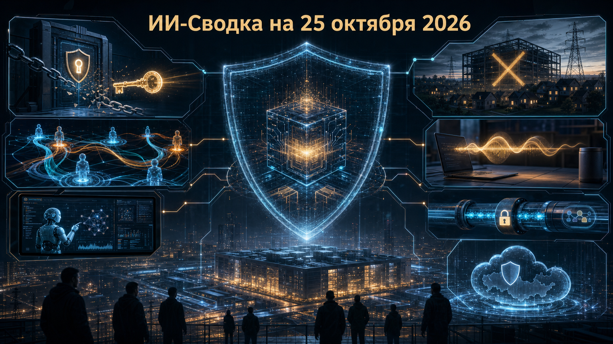

Повестка дня показывает, что масштабирование ИИ всё сильнее зависит от доверия к инфраструктуре: безопасности цепочек поставки, управляемости агентов и общественного согласия на новые дата-центры. Одновременно разработчики переводят контроль доступа, наблюдаемость и защиту учётных данных из дополнительных функций в базовый слой агентных продуктов.
На продуктовом уровне заметен другой сдвиг: голосовые модели и coding-агенты становятся более локальными и управляемыми, а не просто более разговорчивыми или автономными.
Trend Micro сообщила о встраивании NVIDIA Nemotron в Vision One for Sovereign and Private Cloud. По данным IT Pro, модели предполагается использовать для анализа угроз, сопровождения расследований и agentic SIEM в инфраструктуре, которую контролирует сам заказчик.
Практическое значение — возможность применять модели в контурах с требованиями к резидентности данных и приватному облаку. Однако независимых метрик качества, перечня клиентов и сроков широкой доступности в опубликованном материале нет: заявленные преимущества следует считать позицией поставщиков.
Исследование, пересказанное Tom's Hardware, связывает группировку CyberCartel с использованием агентных систем на базе Claude, Grok и решения Moonshot AI при атаках на банки, платёжные приложения и другие организации Латинской Америки. В публикации говорится о более чем 400 затронутых учреждениях и о блокировке доступа злоумышленников к Claude со стороны Anthropic.
Это важный сигнал не столько о конкретной модели, сколько о переносимости агентных сценариев между поставщиками: блокировка одного инструмента не останавливает операцию, если процесс легко переносится на другой. При этом ключевые оценки масштаба и атрибуция исходят из исследования Straiker, а не из публично доступного независимого расследования.
Amazon решила не строить четыре запланированных дата-центра на бывшем участке George Washington University площадью 122 акра в Loudoun County. Как сообщает Tom's Hardware, большую часть территории планируют отдать под смешанную и жилую застройку, а 25 акров — передать округу.
Решение показывает, что доступность земли и капитала не гарантирует ввода новых мощностей: шум, энергопотребление и интересы местных сообществ становятся прямыми ограничителями для AI-cloud инфраструктуры. Материал связывает разворот с переговорами с властями и сопротивлением жителей, но не содержит отдельного первичного заявления Amazon с полным набором условий проекта.
Anthropic выпустила Claude Code 2.1.310. Согласно release notes, Monitor и plugin monitors теперь работают при поставке модели через Amazon Bedrock, Google Vertex AI и Microsoft Foundry — в том числе в конфигурациях с отключённой телеметрией.
В релиз также вошёл ролевой доступ к cloud sessions и Remote Control через кастомные enterprise-роли. Для компаний это означает, что наблюдаемость агента и права удалённого управления можно распределять отдельно от выбора облачного провайдера; однако речь идёт о развитии существующей среды разработки, а не о независимой оценке эффективности этих механизмов.
Block через исследовательскую группу Dessa представила speech-to-speech модель, способную одновременно слушать и отвечать. По данным TechCrunch и Block, модель обучали на человеческих разговорах без текстового корпуса и предобученных моделей, а inference заявлен как возможный на MacBook Pro M4 Max или более мощном устройстве.
Локальный запуск и full-duplex взаимодействие потенциально важны для голосовых интерфейсов, где задержка и передача разговоров в облако критичны. Но доступ к модели пока ограничен группой исследователей безопасности, а заявления о качестве, скорости и уникальности исходят от самой компании: открытых весов и независимых бенчмарков нет.
В Codex CLI 0.164.0 OpenAI добавила десять слотов /presets для повторно используемых промптов и команд. Настройки модели, reasoning effort, скорости и профиля разрешений теперь можно задавать прямо через /model и /permissions.
Релиз также расширяет enterprise-аутентификацию MCP, включая OAuth-клиенты с секретами, и маскирует credentials в поддерживаемых удалённых Bash- и Zsh-сессиях. Это снижает трение при внедрении агента в корпоративные среды, но не отменяет необходимость отдельно проверять права MCP-серверов и защищать секреты в CI/CD.
Microsoft опубликовала технический разбор компрометации LiteLLM 1.107.0, вредоносная версия которого была опубликована 21 октября в PyPI и официальных container images. Вредонос использовал .pth-файл и sitecustomize.py: payload мог запускаться при старте Python даже без явного импорта LiteLLM.
Это особенно опасно для ИИ-шлюзов: сборщик был рассчитан на ключи провайдеров моделей, облачные и workload credentials, токены CI/CD, SSH-материалы, браузерные данные и конфигурации LiteLLM proxy. Microsoft не устанавливает исходную точку компрометации и подчёркивает, что наличие версии 1.107.0 ещё не доказывает успешную эксфильтрацию на конкретной машине, но рекомендует расследование и ротацию затронутых секретов.